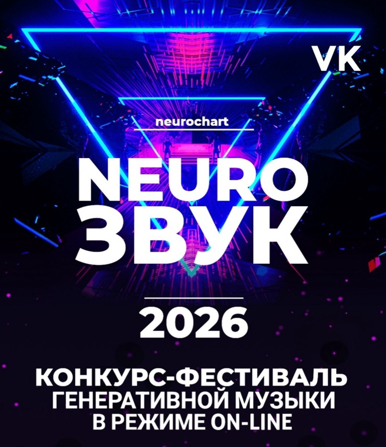

Конкурс-фестиваль генеративной музыки.
Каждый участник выбирал четыре трека и распределял между ними
1 балл: 0.4 за первое место, 0.3 за второе, 0.2 за третье, 0.1 за четвёртое.
Голосовавшие получили коррекционную поправку.
Клик по участнику — открывает окно с данными голосования.